Easily donate and request blood through a newtwork of reliability. Codepath iOS for Designers Group Project
- UX, Interaction, and Visual Design
- iOS development using Swift
- Parse integration
We chose a non-profit ABO that aims to fascilitate the problem of maintaining blood donors for blood banks. Upon further research, we discovered a facebook app... Social blood that aims at connecting individual donors directly with people in need of blood donations. We thought, why not combine this. Why not combine the two so that donations and requests for blod could be handled in one network. The blood donation system has always been a struggle. GiveABO aims at creating a platform that will demystify and encourage the blood donation process.
Our focus was people, who are aware of the need, but don't think about making the time or are a bit scared of giving blood and don't really understand the process and feel it's a time consuming system
The process
Sketches and workflows datailing goals and user flow.
 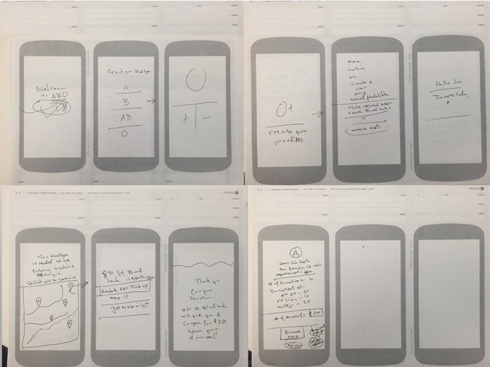
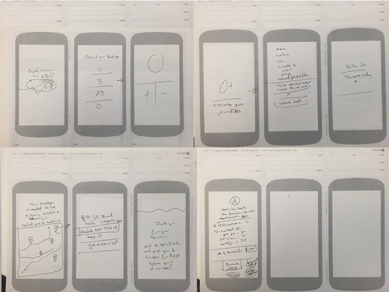
 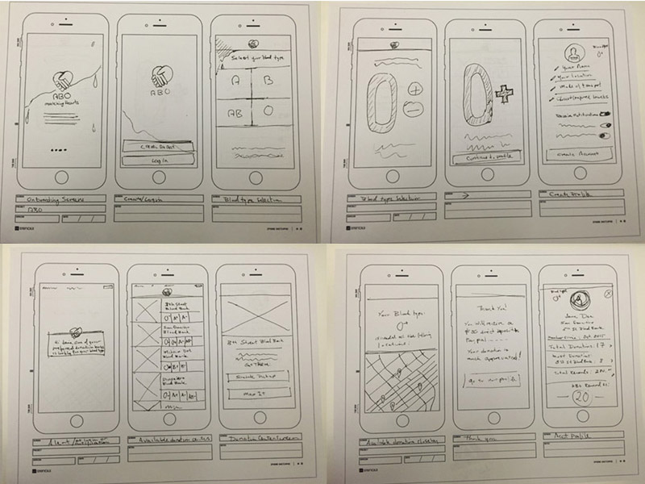
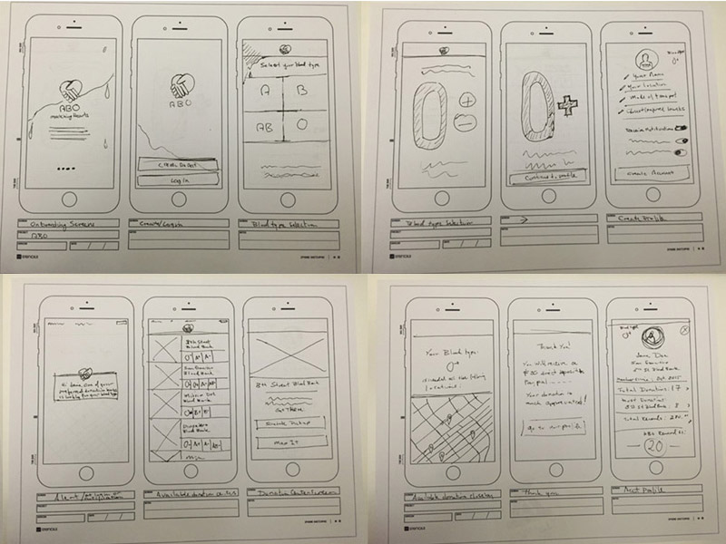
 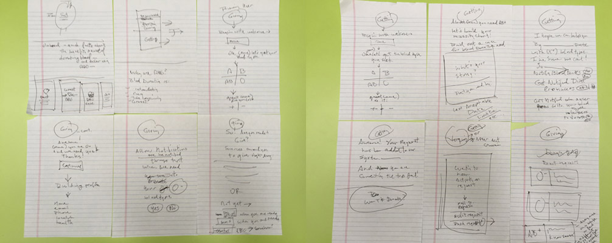
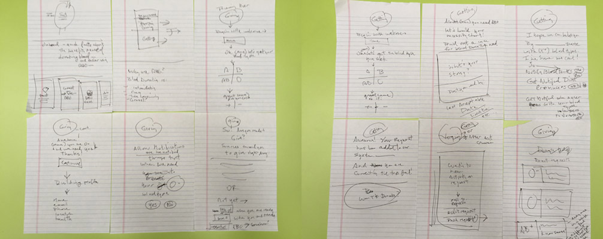
First iteration of look and feel and prototyping of task flow in Xcode. 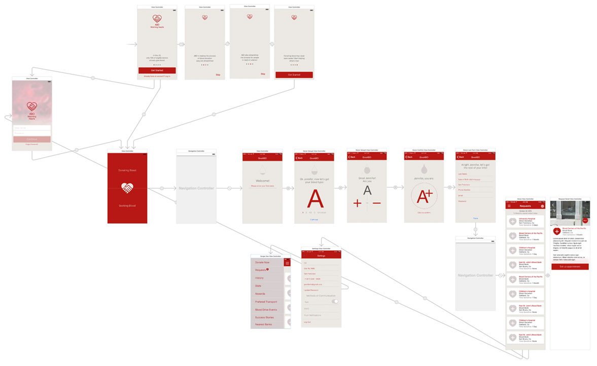 Sketches were translated into quick mock-ups detailing most necesarry elements each section.
The logo

 Re-created the logo based on existing artwork from ABO.
Re-created the logo based on existing artwork from ABO.
High fidelity wireframes with basic flow. 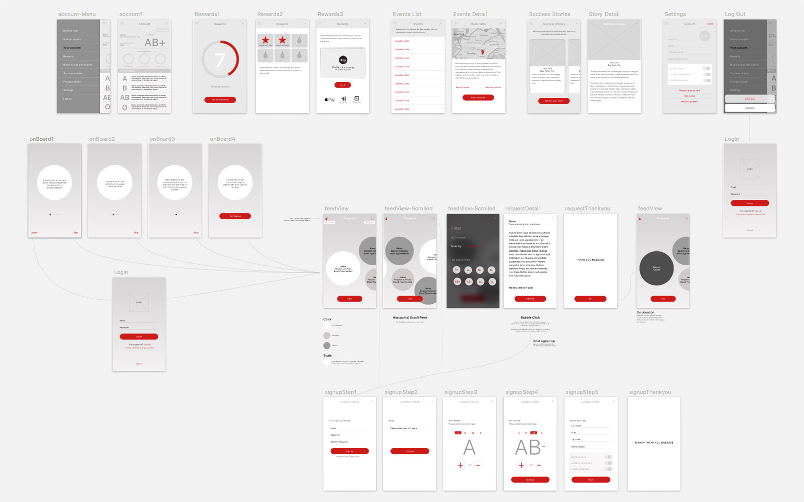
Detail of Visual designs for Home and Onboarding screens. 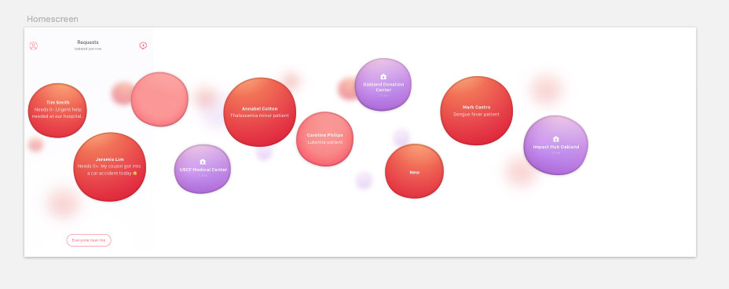 By Christopher Sybico
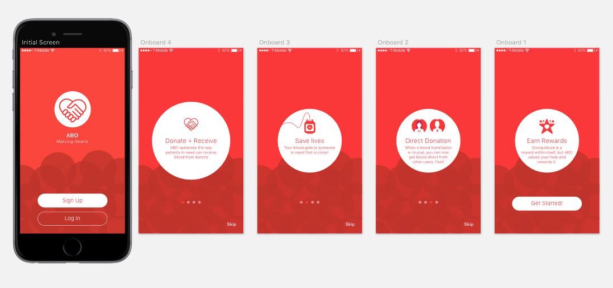
Sign up, Onboarding, and Account section flows in Xcode 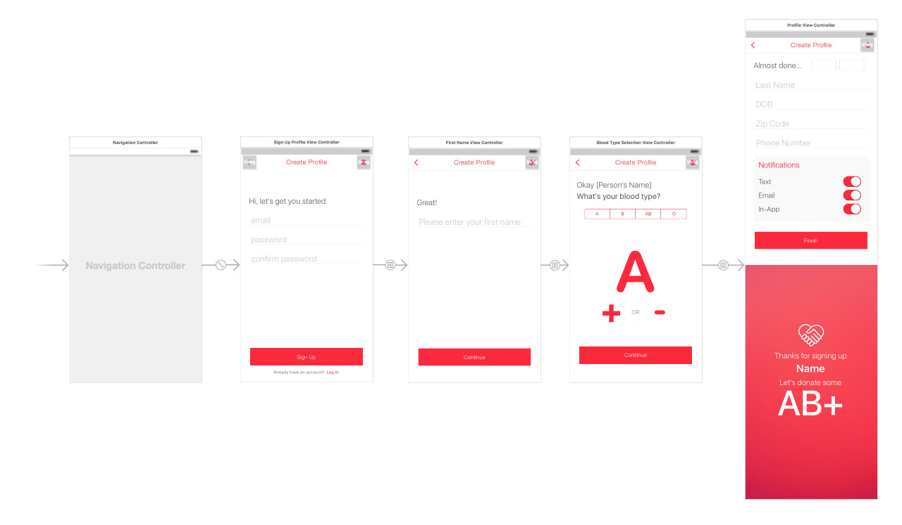 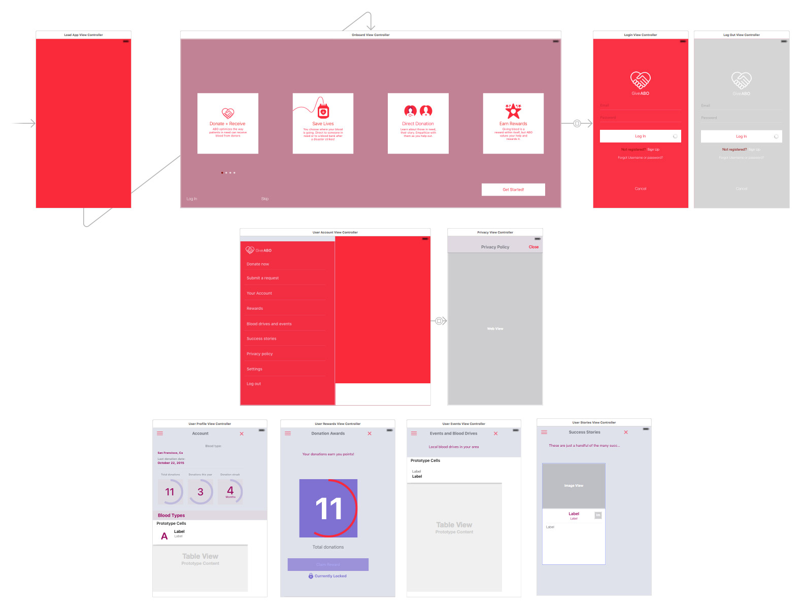
Visual design of various screens throughtout the app. 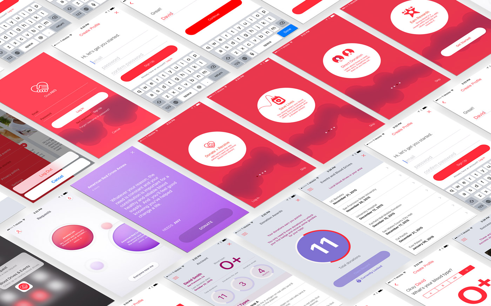
My Responsibilities
Responsibilities involve both design and coding of the sections, screens and task flow. With only a small amount of work left, this will be a fully functional MVP to display for anyone interested.
- Initializing of the user experience
- Onboarding
- Login Screens
- Sign Up section UI and Flow
- Account screens
- Parse for User data and Push notifications